받은 파일을 두 번 눌러 브라우저(크롬·엣지)로 엽니다. 인터넷 없이 열립니다. → 키나 마우스 클릭으로 다음 장, ← 키로 이전 장, G 키로 전체 장 보기. 실습 장은 숫자 1 6 1 을 누르고 Enter 로 갑니다.
기본 익히기
시작하기 전에 두 가지
실습하는 동안 이 페이지 탭은 닫지 않습니다. 이 탭과 Claude 탭을 오가며 합니다.
기본 ①입력창과 ＋ 단추
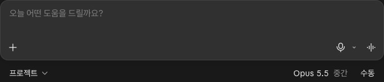
왼쪽 위 「새로 만들기」를 누르면 새 대화가 열립니다
가운데 긴 상자가 입력창입니다. 여기에 글을 붙여 넣습니다
왼쪽 아래 ＋ 단추로 파일을 올립니다
실습마다 새 대화로 시작합니다
기본 ②글은 「복사」 단추로 가져옵니다
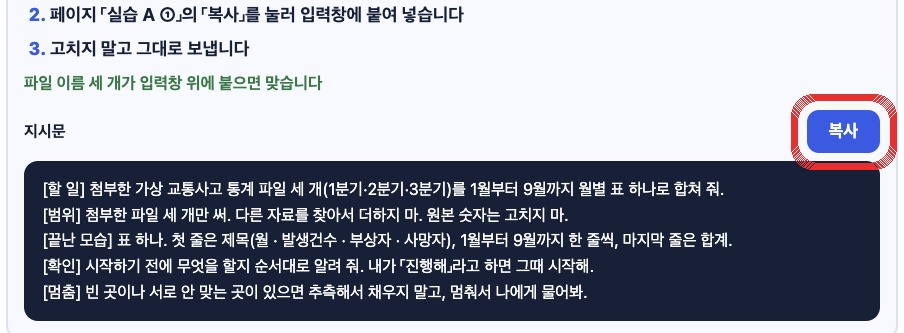
실습 페이지의 까만 상자 오른쪽 위 「복사」를 누릅니다
Claude 탭으로 가서 입력창을 한 번 누릅니다
Ctrl+V 로 붙여 넣고 Enter 로 보냅니다
화면의 표시(예: 실습 A ①)와 같은 이름을 페이지에서 찾습니다
막혔을 때
파일이 안 올라가요 → 압축을 풀었는지 확인합니다. zip 파일을 그대로 올리면 안 됩니다.
붙여 넣었더니 바로 보내졌어요 → 괜찮습니다. 결과를 보고 다음 단계로 갑니다.
「사용 한도」 안내가 떠요 → 옆 분 화면을 같이 봅니다. 잠시 뒤 다시 됩니다.
답이 영어로 나와요 → 「한국어로 답해 줘」라고 보냅니다.
결과가 옆 분과 달라요 → 정상입니다. 무엇이 다른지 비교하는 것이 실습입니다.
실습 A
표 정리 맡기기
강연에서 본 시연 ①을 직접 해 봅니다. 파일 세 개에는 일부러 넣어 둔 함정이 두 군데 있습니다.
실습 A ①파일 세 개를 올리고 지시문을 붙입니다
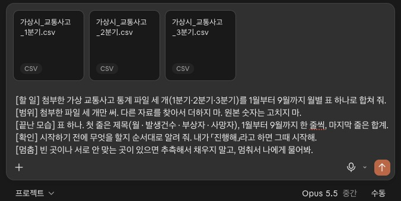
새 대화에서 ＋ 단추를 눌러 csv 파일 세 개를 올립니다
페이지 「실습 A ①」의 「복사」를 눌러 입력창에 붙여 넣습니다
고치지 말고 그대로 보냅니다
파일 이름 세 개가 입력창 위에 붙으면 맞습니다
지시문
[할 일] 첨부한 가상 교통사고 통계 파일 세 개(1분기·2분기·3분기)를 1월부터 9월까지 월별 표 하나로 합쳐 줘.
[범위] 첨부한 파일 세 개만 써. 다른 자료를 찾아서 더하지 마. 원본 숫자는 고치지 마.
[끝난 모습] 표 하나. 첫 줄은 제목(월 · 발생건수 · 부상자 · 사망자), 1월부터 9월까지 한 줄씩, 마지막 줄은 합계.
[확인] 시작하기 전에 무엇을 할지 순서대로 알려 줘. 내가 「진행해」라고 하면 그때 시작해.
[멈춤] 빈 곳이나 서로 안 맞는 곳이 있으면 추측해서 채우지 말고, 멈춰서 나에게 물어봐.
실습 A ②AI가 멈춰서 묻습니다
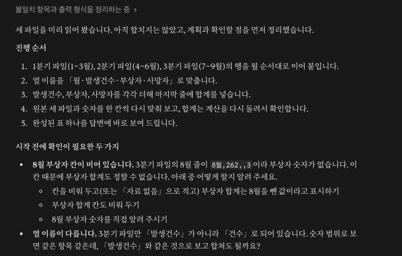
표를 바로 만들지 않고 순서부터 말합니다
빈 숫자와 다른 열 이름을 물어봅니다
내가 정해서 답하고 「진행해」라고 보냅니다
무엇을 물었는지 적어 두세요
답 예시 (내 생각대로 고쳐도 됩니다)
8월 부상자는 비워 두고, 합계는 8월을 뺀 값이라고 표시해 줘. 「건수」는 발생건수와 같은 거야. 진행해
실습 A ③결과 표를 원본과 대조합니다
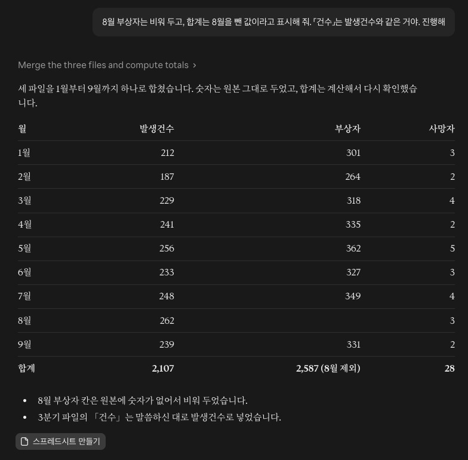
8월 부상자가 비어 있는지 봅니다
합계에 「8월 제외」가 적혔는지 봅니다
csv 파일을 열어 숫자 두세 개를 직접 대조합니다
AI가 「다시 확인했다」고 해도 대조는 사람이 합니다
확인 기준
AI 가 시작하기 전에 멈춰서 물었는가 (무엇을 물었는지 적어 두세요)
비어 있는 숫자를 AI 가 마음대로 채우지 않았는가
합계를 내가 원본과 직접 대조했는가
실습 B
한 줄과 윤문 스킬
같은 안내문 초안을 두 가지 방법으로 고쳐 보고 비교합니다.
실습 B ①먼저 한 줄로 시켜 봅니다
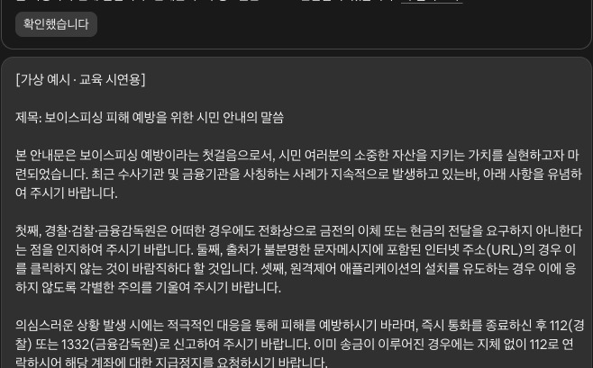
새 대화를 엽니다(왼쪽 위 「새로 만들기」)
페이지 「실습 B ①」의 「복사」를 눌러 입력창에 붙여 넣습니다
고치지 말고 그대로 보냅니다
「다듬어 줘」 한 줄과 안내문 초안이 함께 복사됩니다
한 줄 지시문 + 안내문 초안
아래 안내문을 다듬어 줘.
[가상 예시 · 교육 시연용]
제목: 보이스피싱 피해 예방을 위한 시민 안내의 말씀
본 안내문은 보이스피싱 예방이라는 첫걸음으로서, 시민 여러분의 소중한 자산을 지키는 가치를 실현하고자 마련되었습니다. 최근 수사기관 및 금융기관을 사칭하는 사례가 지속적으로 발생하고 있는바, 아래 사항을 유념하여 주시기 바랍니다.
첫째, 경찰·검찰·금융감독원은 어떠한 경우에도 전화상으로 금전의 이체 또는 현금의 전달을 요구하지 아니한다는 점을 인지하여 주시기 바랍니다. 둘째, 출처가 불분명한 문자메시지에 포함된 인터넷 주소(URL)의 경우 이를 클릭하지 않는 것이 바람직하다 할 것입니다. 셋째, 원격제어 애플리케이션의 설치를 유도하는 경우 이에 응하지 않도록 각별한 주의를 기울여 주시기 바랍니다.
의심스러운 상황 발생 시에는 적극적인 대응을 통해 피해를 예방하시기 바라며, 즉시 통화를 종료하신 후 112(경찰) 또는 1332(금융감독원)로 신고하여 주시기 바랍니다. 이미 송금이 이루어진 경우에는 지체 없이 112로 연락하시어 해당 계좌에 대한 지급정지를 요청하시기 바랍니다.
가상경찰서 수사과 (문의: 평일 09:00~18:00)
실습 B ②한 줄로 시킨 결과를 봅니다
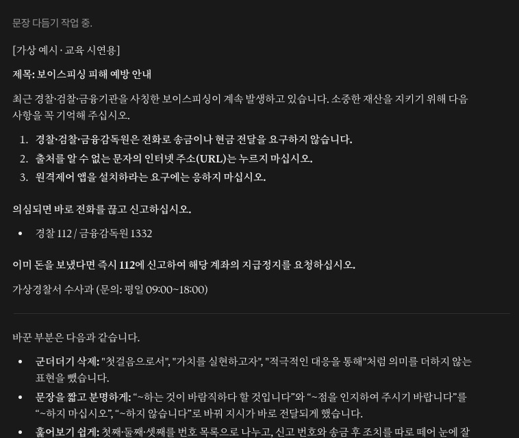
결론(끊고 112)이 어디에 있는지 찾습니다
말투와 순서를 누가 정했는지 봅니다
AI가 마음대로 정한 것을 세어 봅니다
이 대화는 닫지 않고 그대로 둡니다
실습 B ③새 대화에 윤문 스킬 글을 먼저 붙여 넣습니다
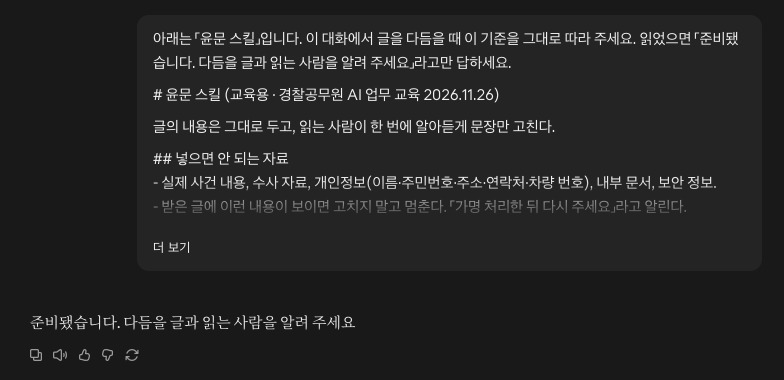
새 대화를 하나 더 엽니다
페이지 「실습 B ③」의 「복사」를 눌러 붙여 넣고 보냅니다
「준비됐습니다」라는 답을 확인합니다
이제 이 대화는 윤문 기준을 알고 있습니다
윤문 스킬 글
아래는 「윤문 스킬」입니다. 이 대화에서 글을 다듬을 때 이 기준을 그대로 따라 주세요. 읽었으면 「준비됐습니다. 다듬을 글과 읽는 사람을 알려 주세요」라고만 답하세요.
# 윤문 스킬 (교육용 · 경찰공무원 AI 업무 교육 2026.11.26)
글의 내용은 그대로 두고, 읽는 사람이 한 번에 알아듣게 문장만 고친다.
## 넣으면 안 되는 자료
- 실제 사건 내용, 수사 자료, 개인정보(이름·주민번호·주소·연락처·차량 번호), 내부 문서, 보안 정보.
- 받은 글에 이런 내용이 보이면 고치지 말고 멈춘다. 「가명 처리한 뒤 다시 주세요」라고 알린다.
## 순서
1. **읽는 사람 확인.** 누가 읽는 글인지 모르면 먼저 묻는다(예: 60대 이상 시민, 기자, 내부 결재권자).
2. **사실 목록 뽑기.** 고치기 전에 원문의 사실을 번호 목록으로 뽑는다: 숫자, 날짜·시간, 전화번호, 금액, 기관·부서 이름, 해야 할 행동.
3. **고치기.** 아래 「고치는 기준」대로 고친다.
4. **대조.** 2번 목록의 사실이 고친 글에 그대로 있는지 하나씩 확인해 표로 보여 준다(사실 / 고친 글에 있음 / 바뀜).
5. **바꾼 곳 알리기.** 무엇을 바꿨는지 세 줄로 적는다.
## 고치는 기준
### 1단계 · 사람이 쓰지 않는 말 빼기
- 뜻 없이 꾸미는 말: 「가치를 실현」「첫걸음으로서」「소중한」「각별한 주의」「적극적인 대응」「지속적으로」
- 돌려 말하기: 「~라 할 것입니다」「~하는 것이 바람직하다」「~인바」「~하시어」「~하여 주시기 바랍니다」가 줄마다 되풀이되는 것
- 같은 말 되풀이, 번역한 것 같은 문장(「~에 대한」「~을 통해」가 겹치는 문장)
### 2단계 · 문서 규칙
- 결론과 해야 할 행동을 맨 앞에 둔다.
- 한 문장에 한 가지 뜻. 한 문장은 40자 안팎.
- 어려운 한자어·외래어는 쉬운 말로 바꾼다(이체 → 돈을 보냄, 애플리케이션 → 앱, 유념 → 꼭 기억).
- 해야 할 일이 여러 개면 번호를 붙인다.
- 높임말 수준은 읽는 사람에 맞춘다(시민 안내문은 「~하세요」「~합니다」).
### 3단계 · 우리 기관 규칙 (여기에 더합니다)
- (예: 날짜는 「2026. 11. 26.(목)」으로 쓴다)
- (예: 기관 이름은 줄이지 않는다)
- (결재 때 받은 지적을 한 줄씩 여기에 쌓습니다)
## 꼭 지킬 것
- 사실·숫자·전화번호·기관 이름·시간은 하나도 바꾸지 않는다. 원문에 없는 내용을 더하지 않는다.
- 뜻이 분명하지 않은 곳은 추측해서 고치지 말고 `[확인 필요]`라고 표시한다.
- 고친 글은 초안이다. 내보내기 전에 담당자가 원문과 대조한다.
실습 B ④지시문 ② 와 안내문 초안을 붙여 넣습니다
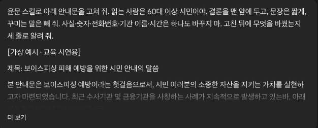
같은 대화에서 이어서 합니다
페이지 「실습 B ④」의 「복사」를 눌러 입력창에 붙여 넣습니다
그대로 보냅니다
읽는 사람과 바꾸면 안 되는 것을 적어 줬습니다
지시문 ② + 안내문 초안
윤문 스킬로 아래 안내문을 고쳐 줘. 읽는 사람은 60대 이상 시민이야. 결론을 맨 앞에 두고, 문장은 짧게, 꾸미는 말은 빼 줘. 사실·숫자·전화번호·기관 이름·시간은 하나도 바꾸지 마. 고친 뒤에 무엇을 바꿨는지 세 줄로 알려 줘.
[가상 예시 · 교육 시연용]
제목: 보이스피싱 피해 예방을 위한 시민 안내의 말씀
본 안내문은 보이스피싱 예방이라는 첫걸음으로서, 시민 여러분의 소중한 자산을 지키는 가치를 실현하고자 마련되었습니다. 최근 수사기관 및 금융기관을 사칭하는 사례가 지속적으로 발생하고 있는바, 아래 사항을 유념하여 주시기 바랍니다.
첫째, 경찰·검찰·금융감독원은 어떠한 경우에도 전화상으로 금전의 이체 또는 현금의 전달을 요구하지 아니한다는 점을 인지하여 주시기 바랍니다. 둘째, 출처가 불분명한 문자메시지에 포함된 인터넷 주소(URL)의 경우 이를 클릭하지 않는 것이 바람직하다 할 것입니다. 셋째, 원격제어 애플리케이션의 설치를 유도하는 경우 이에 응하지 않도록 각별한 주의를 기울여 주시기 바랍니다.
의심스러운 상황 발생 시에는 적극적인 대응을 통해 피해를 예방하시기 바라며, 즉시 통화를 종료하신 후 112(경찰) 또는 1332(금융감독원)로 신고하여 주시기 바랍니다. 이미 송금이 이루어진 경우에는 지체 없이 112로 연락하시어 해당 계좌에 대한 지급정지를 요청하시기 바랍니다.
가상경찰서 수사과 (문의: 평일 09:00~18:00)
실습 B ⑤고친 글과 사실 대조표가 나옵니다
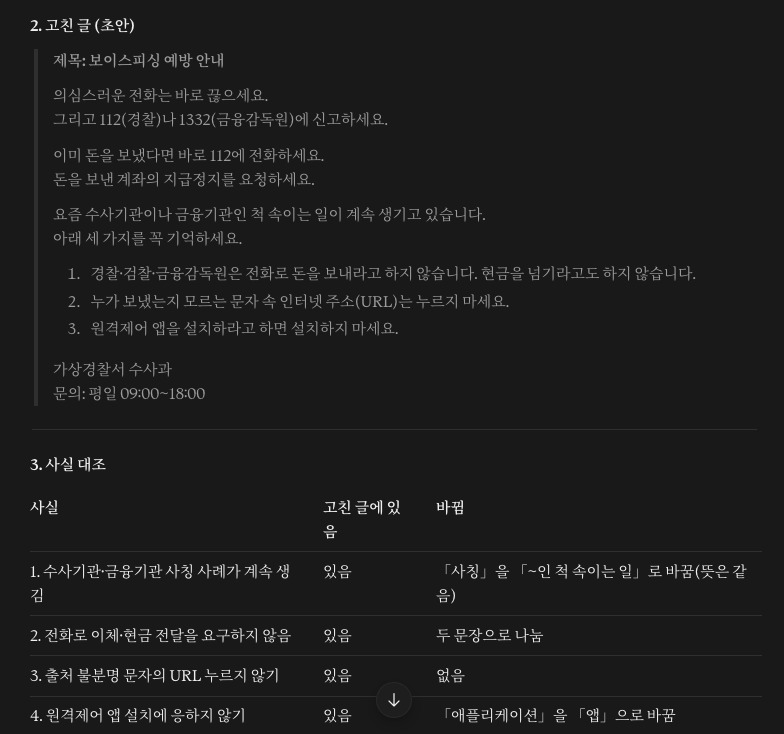
결론이 맨 앞으로 왔는지 봅니다
사실 여덟 가지가 그대로인지 하나씩 짚습니다
한 줄로 시킨 첫 대화와 나란히 놓고 비교합니다
같은 초안인데 시킨 방법에 따라 결과가 달라집니다
확인 기준 · 원문의 사실 여덟 가지 (실습 B ⑤ 에서 하나씩 짚습니다)
경찰 · 검찰 · 금융감독원 (기관 세 곳)
전화로 돈을 보내라거나 현금을 달라고 하지 않는다
출처 모르는 문자의 인터넷 주소를 누르지 않는다
원격제어 앱을 깔라고 하면 따르지 않는다
112 (경찰) · 1332 (금융감독원)
이미 보냈으면 112 에 지급정지 요청
가상경찰서 수사과 · 평일 09:00~18:00
실습 C
우리 기관 규칙 더하기
받은 스킬을 가져다 우리 업무에 맞게 고쳐 씁니다. 실습 B 의 둘째 대화에서 이어서 합니다.
실습 C ①우리 기관 규칙 세 줄을 더합니다
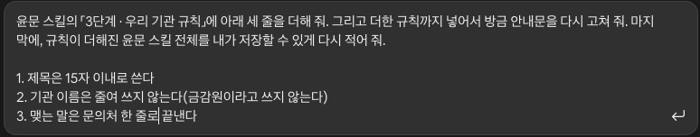
문서 쓸 때 늘 지키는 것, 자주 지적받는 것을 세 줄 적습니다
실습 B 의 둘째 대화에 페이지 「실습 C ①」의 지시문을 붙여 넣습니다
괄호 세 군데를 내 세 줄로 바꿔 보냅니다
「잘 쓴다」처럼 뜻이 넓은 말은 규칙이 못 됩니다
지시문 (괄호 세 군데를 바꿔 넣습니다)
윤문 스킬의 「3단계 · 우리 기관 규칙」에 아래 세 줄을 더해 줘. 그리고 더한 규칙까지 넣어서 방금 안내문을 다시 고쳐 줘. 마지막에, 규칙이 더해진 윤문 스킬 전체를 내가 저장할 수 있게 다시 적어 줘.
1. (우리 기관 규칙 하나)
2. (우리 기관 규칙 둘)
3. (우리 기관 규칙 셋)
실습 C ②규칙이 더해진 스킬을 저장합니다
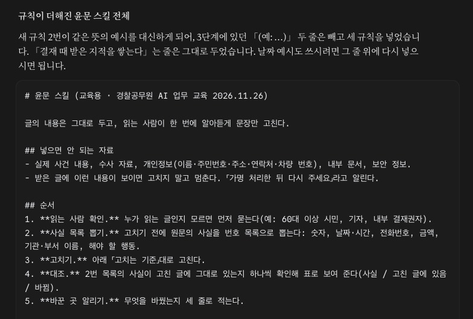
다시 고친 안내문에서 세 줄이 지켜졌는지 봅니다
아래에 나온 윤문 스킬 전체를 복사합니다
메모장에 붙여 「우리부서_윤문스킬」로 저장합니다
다음부터는 이 파일을 붙여 넣고 시작합니다
확인 기준
규칙 세 줄이 「이렇게 쓴다」고 따라 할 수 있게 적혔는가
실제 사건·이름·내부 문서 내용을 규칙에 넣지 않았는가
고친 스킬 글을 내 노트북에 저장했는가
실습 D
내 스킬 한 장
실습 ③에서 만든 내 업무 스킬을, 다른 사람이 받아서 쓸 수 있는 한 장으로 정리합니다.
실습 D내 스킬을 한 장으로 정리합니다
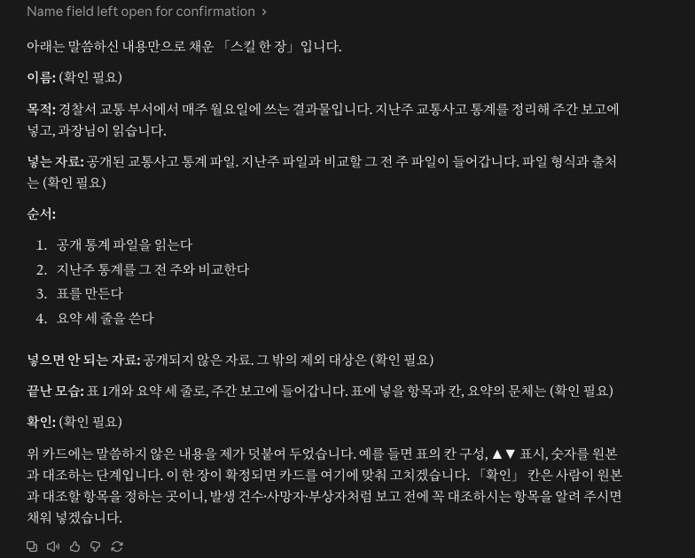
실습 ③ 을 했던 대화를 엽니다(없으면 새 대화에 내 업무를 세 문장으로 설명)
페이지 「실습 D」의 「복사」를 눌러 붙여 넣고 보냅니다
「(확인 필요)」라고 나온 곳을 내가 채워 다시 보냅니다
다 되면 옆 분에게 보여 주고, 설명 없이 따라 할 수 있는지 묻습니다
실습 ③ 대화가 없을 때 — 내 업무 설명 틀 (괄호를 바꿔 넣습니다)
나는 (어느 부서)에서 매주 (무슨 문서)를 만들어. (어떤 자료)를 보고, (어떤 순서)로 써. 읽는 사람은 (누구)야.
스킬 한 장 지시문
지금까지 정리한 내 업무를 아래 서식의 「스킬 한 장」으로 채워 줘. 내가 말하지 않은 내용은 지어내지 말고 「(확인 필요)」라고 적어. 실제 사건·이름·일정은 넣지 마.
이름:
목적: (누가, 언제 쓰는 결과물인가)
넣는 자료: (공개 자료·가상 자료만)
순서: 1. 2. 3. 4.
넣으면 안 되는 자료:
끝난 모습: (결과물의 모양)
확인: (사람이 무엇을 원본과 대조하는가)
확인 기준
「넣으면 안 되는 자료」가 비어 있지 않은가
「확인」에 사람이 직접 대조할 것이 적혔는가
옆 분이 읽고 그대로 따라 할 수 있다고 했는가
골라서 하는 실습
다섯 가지 가운데 골라서
내 업무와 가까운 것부터 합니다. 한 가지에 10~15분쯤 걸립니다. 자료는 모두 지어낸 가상 자료입니다.
실습 E
회의 메모를 회의록으로
손으로 적은 메모를 회의록과 할 일 표로 바꿉니다. 메모에 없는 것을 AI가 지어내는지 봅니다.
실습 E ①회의 메모를 붙여 넣습니다
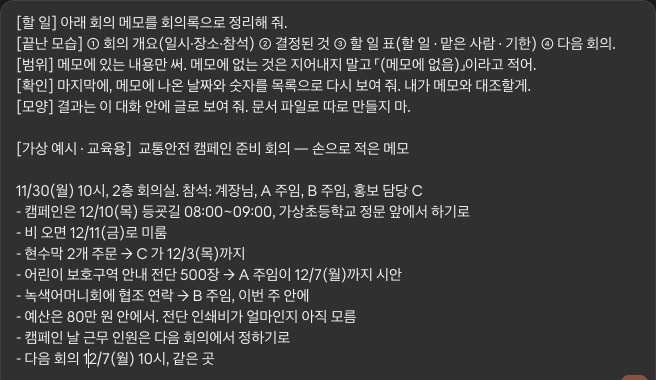
새 대화를 엽니다(왼쪽 위 「새로 만들기」)
페이지 「실습 E ①」의 「복사」를 눌러 입력창에 붙여 넣습니다
고치지 말고 그대로 보냅니다
지시문과 가상 회의 메모가 함께 복사됩니다
지시문 + 회의 메모
[할 일] 아래 회의 메모를 회의록으로 정리해 줘.
[끝난 모습] ① 회의 개요(일시·장소·참석) ② 결정된 것 ③ 할 일 표(할 일 · 맡은 사람 · 기한) ④ 다음 회의.
[범위] 메모에 있는 내용만 써. 메모에 없는 것은 지어내지 말고 「(메모에 없음)」이라고 적어.
[확인] 마지막에, 메모에 나온 날짜와 숫자를 목록으로 다시 보여 줘. 내가 메모와 대조할게.
[모양] 결과는 이 대화 안에 글로 보여 줘. 문서 파일로 따로 만들지 마.
[가상 예시 · 교육용] 교통안전 캠페인 준비 회의 — 손으로 적은 메모
11/30(월) 10시, 2층 회의실. 참석: 계장님, A 주임, B 주임, 홍보 담당 C
- 캠페인은 12/10(목) 등굣길 08:00~09:00, 가상초등학교 정문 앞에서 하기로
- 비 오면 12/11(금)로 미룸
- 현수막 2개 주문 → C 가 12/3(목)까지
- 어린이 보호구역 안내 전단 500장 → A 주임이 12/7(월)까지 시안
- 녹색어머니회에 협조 연락 → B 주임, 이번 주 안에
- 예산은 80만 원 안에서. 전단 인쇄비가 얼마인지 아직 모름
- 캠페인 날 근무 인원은 다음 회의에서 정하기로
- 다음 회의 12/7(월) 10시, 같은 곳
실습 E ②회의록과 할 일 표가 나옵니다
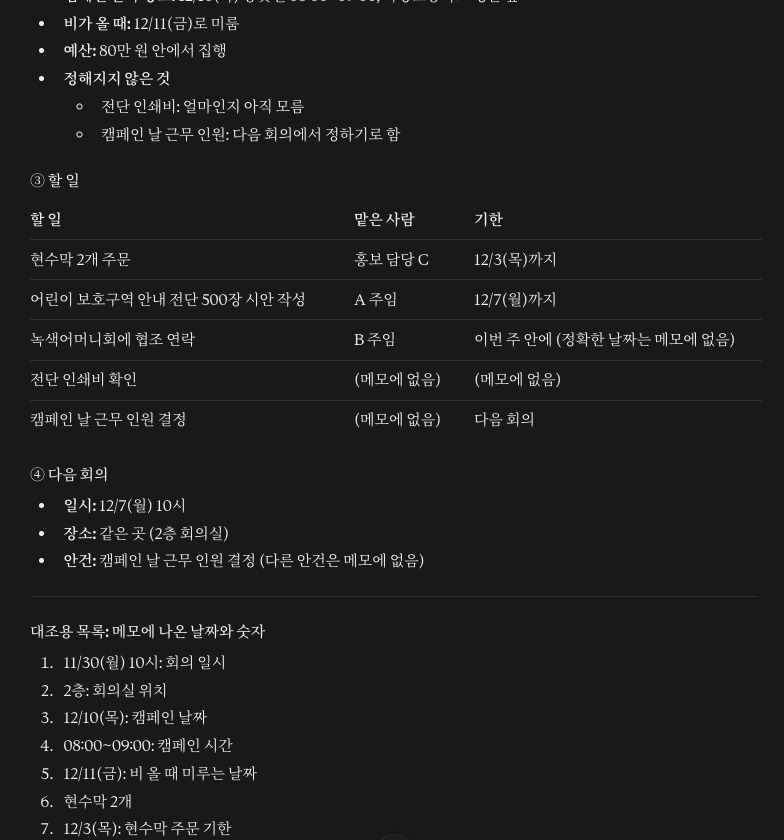
할 일 표의 기한을 메모와 하나씩 대조합니다
「(메모에 없음)」이라고 적힌 곳을 찾습니다
맨 아래 날짜·숫자 목록을 메모와 대조합니다
「(메모에 없음)」이 다음 회의에서 정할 것입니다
확인 기준
날짜 다섯 개와 숫자(현수막 2개, 전단 500장, 80만 원)가 메모 그대로인가
메모에 없는 내용(인쇄비, 근무 인원)을 AI가 지어내지 않았는가
할 일마다 맡은 사람이 적혔는가
실습 F
민원 답변 초안 세 가지
「알아서 써 줘」 대신 세 가지를 받아 내가 고릅니다.
실습 F ①가상 민원을 붙여 넣습니다
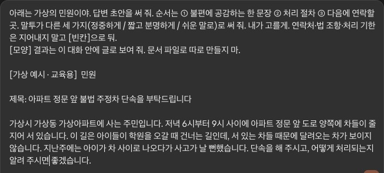
새 대화를 엽니다(왼쪽 위 「새로 만들기」)
페이지 「실습 F ①」의 「복사」를 눌러 입력창에 붙여 넣습니다
고치지 말고 그대로 보냅니다
지시문과 가상 민원이 함께 복사됩니다
지시문 + 가상 민원
아래는 가상의 민원이야. 답변 초안을 써 줘. 순서는 ① 불편에 공감하는 한 문장 ② 처리 절차 ③ 다음에 연락할 곳. 말투가 다른 세 가지(정중하게 / 짧고 분명하게 / 쉬운 말로)로 써 줘. 내가 고를게. 연락처·법 조항·처리 기한은 지어내지 말고 [빈칸]으로 둬.
[모양] 결과는 이 대화 안에 글로 보여 줘. 문서 파일로 따로 만들지 마.
[가상 예시 · 교육용] 민원
제목: 아파트 정문 앞 불법 주정차 단속을 부탁드립니다
가상시 가상동 가상아파트에 사는 주민입니다. 저녁 6시부터 9시 사이에 아파트 정문 앞 도로 양쪽에 차들이 줄지어 서 있습니다. 이 길은 아이들이 학원을 오갈 때 건너는 길인데, 서 있는 차들 때문에 달려오는 차가 보이지 않습니다. 지난주에는 아이가 차 사이로 나오다가 사고가 날 뻔했습니다. 단속을 해 주시고, 어떻게 처리되는지 알려 주시면 좋겠습니다.
실습 F ②답변 초안이 세 가지로 나옵니다
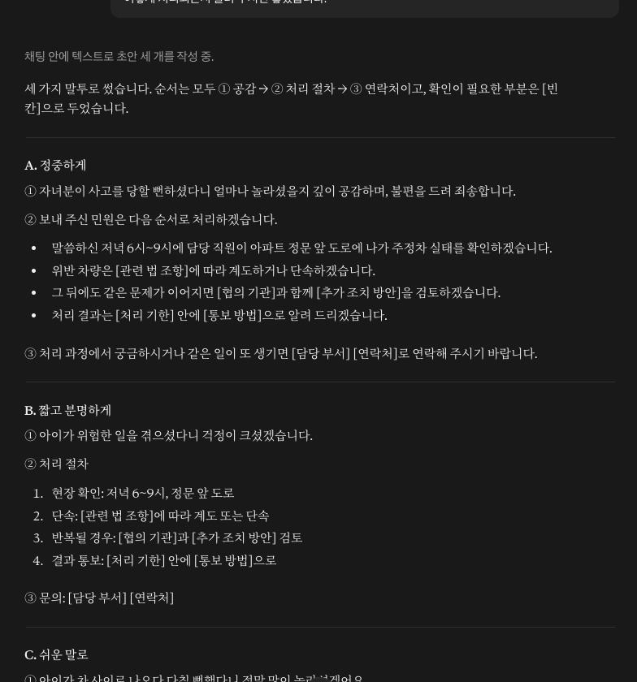
세 가지 가운데 하나를 고르고 이유를 한 줄 적습니다
[빈칸]이 몇 군데인지 셉니다
「2번으로 하되 첫 문장만 1번 것으로」처럼 섞어서 다시 시킵니다
[빈칸]은 담당자가 사실을 확인해 채우는 곳입니다
확인 기준
연락처·법 조항·처리 기한을 AI가 지어내지 않고 [빈칸]으로 뒀는가
세 가지가 정말 말투가 다른가
내가 하나를 고르고 이유를 적었는가
실습 G
통계를 표와 그래프로
실습 A 의 파일 세 개를 다시 씁니다. 이번에는 처음부터 다 정해서 시키고, 그래프까지 받습니다.
실습 G ①파일 세 개를 올리고 지시문을 붙입니다
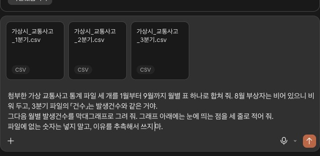
새 대화에서 ＋ 단추로 csv 파일 세 개를 올립니다
페이지 「실습 G ①」의 「복사」를 눌러 입력창에 붙여 넣습니다
그대로 보냅니다
실습 A 에서 AI가 물었던 두 가지를 미리 적어 줬습니다
지시문
첨부한 가상 교통사고 통계 파일 세 개를 1월부터 9월까지 월별 표 하나로 합쳐 줘. 8월 부상자는 비어 있으니 비워 두고, 3분기 파일의 「건수」는 발생건수와 같은 거야.
그다음 월별 발생건수를 막대그래프로 그려 줘. 그래프 아래에는 눈에 띄는 점을 세 줄로 적어 줘.
파일에 없는 숫자는 넣지 말고, 이유를 추측해서 쓰지 마.
실습 G ②표와 막대그래프가 나옵니다
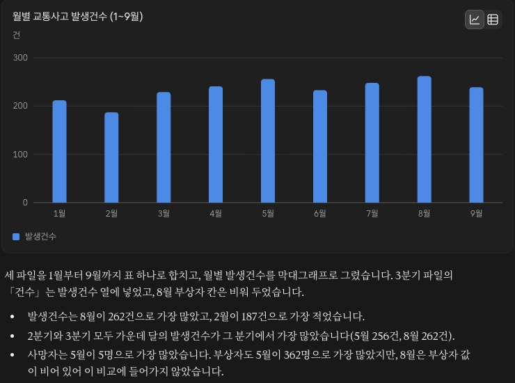
AI가 묻지 않고 바로 만들었는지 봅니다
가장 높은 달과 낮은 달을 csv 파일과 대조합니다
요약 세 줄에 이유가 적혀 있는지 봅니다
「~때문에」가 있으면 AI가 추측한 것입니다
확인 기준
실습 A 와 달리 AI가 묻지 않고 바로 만들었는가
그래프의 가장 높은 달·낮은 달이 파일과 맞는가
요약에 추측한 이유가 없는가
실습 H
번역하고 되돌려 확인
외국어를 몰라도 번역이 맞는지 확인하는 방법입니다.
실습 H ①쉬운 안내문을 붙여 넣습니다
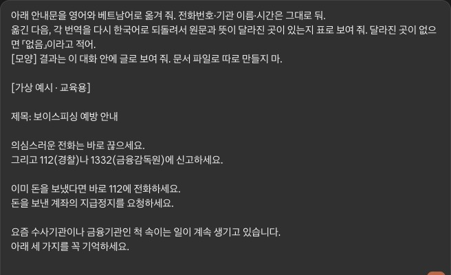
새 대화를 엽니다(왼쪽 위 「새로 만들기」)
페이지 「실습 H ①」의 「복사」를 눌러 입력창에 붙여 넣습니다
고치지 말고 그대로 보냅니다
지시문과 쉬운 말로 고친 안내문이 함께 복사됩니다
지시문 + 쉬운 안내문
아래 안내문을 영어와 베트남어로 옮겨 줘. 전화번호·기관 이름·시간은 그대로 둬.
옮긴 다음, 각 번역을 다시 한국어로 되돌려서 원문과 뜻이 달라진 곳이 있는지 표로 보여 줘. 달라진 곳이 없으면 「없음」이라고 적어.
[모양] 결과는 이 대화 안에 글로 보여 줘. 문서 파일로 따로 만들지 마.
[가상 예시 · 교육용]
제목: 보이스피싱 예방 안내
의심스러운 전화는 바로 끊으세요.
그리고 112(경찰)나 1332(금융감독원)에 신고하세요.
이미 돈을 보냈다면 바로 112에 전화하세요.
돈을 보낸 계좌의 지급정지를 요청하세요.
요즘 수사기관이나 금융기관인 척 속이는 일이 계속 생기고 있습니다.
아래 세 가지를 꼭 기억하세요.
1. 경찰·검찰·금융감독원은 전화로 돈을 보내라고 하지 않습니다. 현금을 넘기라고도 하지 않습니다.
2. 누가 보냈는지 모르는 문자 속 인터넷 주소(URL)는 누르지 마세요.
3. 원격제어 앱을 설치하라고 하면 설치하지 마세요.
가상경찰서 수사과
문의: 평일 09:00~18:00
실습 H ②번역과, 되돌려 비교한 표가 나옵니다
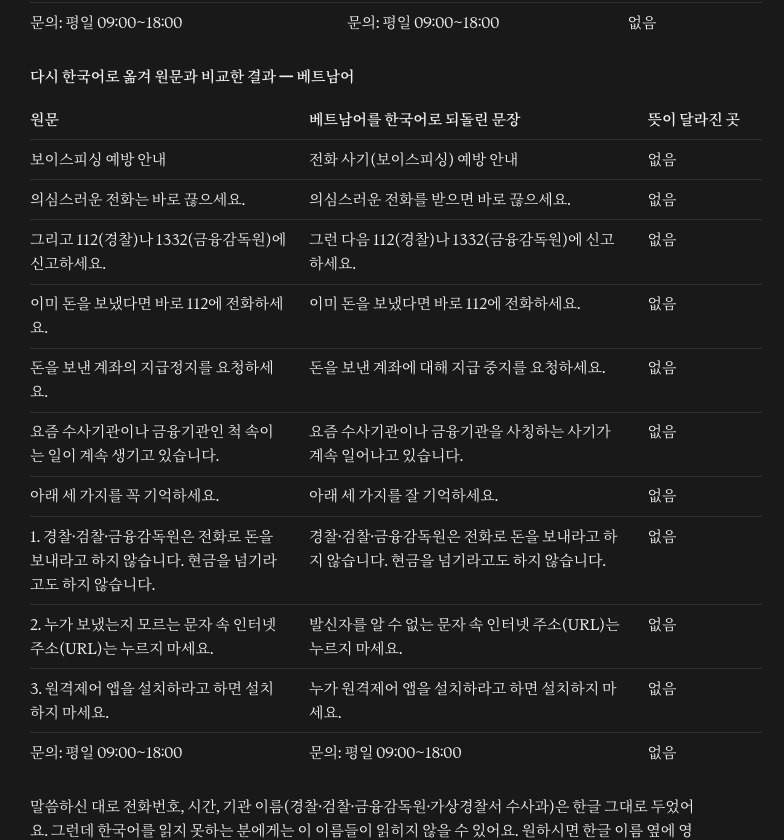
번역문에서 112, 1332, 09:00~18:00 을 찾습니다
되돌린 한국어가 원문과 같은지 표를 봅니다
「달라진 곳」이 있으면 읽어 봅니다
내보내기 전에는 그 언어를 아는 사람이 한 번 더 봅니다
확인 기준
전화번호와 시간이 번역문에 그대로 있는가
되돌린 한국어가 원문과 뜻이 같은가
실제로 내보내기 전에는 그 언어를 아는 사람이 한 번 더 본다는 것을 기억하는가
실습 I
교육 자료와 확인 문제
안내문 하나로 신임 직원 교육 자료와 확인 문제를 만듭니다.
실습 I ①쉬운 안내문을 붙여 넣습니다
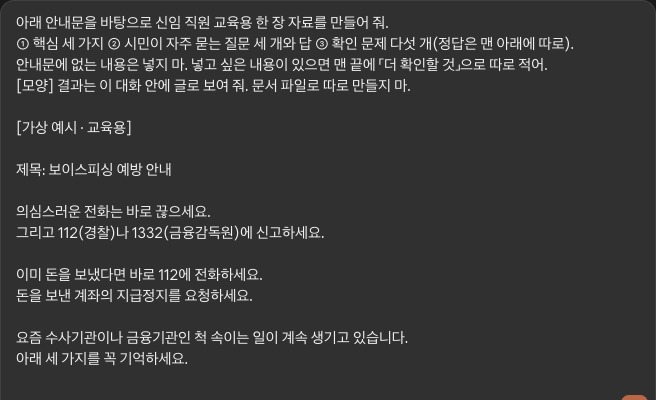
새 대화를 엽니다(왼쪽 위 「새로 만들기」)
페이지 「실습 I ①」의 「복사」를 눌러 입력창에 붙여 넣습니다
고치지 말고 그대로 보냅니다
지시문과 쉬운 말로 고친 안내문이 함께 복사됩니다
지시문 + 쉬운 안내문
아래 안내문을 바탕으로 신임 직원 교육용 한 장 자료를 만들어 줘.
① 핵심 세 가지 ② 시민이 자주 묻는 질문 세 개와 답 ③ 확인 문제 다섯 개(정답은 맨 아래에 따로).
안내문에 없는 내용은 넣지 마. 넣고 싶은 내용이 있으면 맨 끝에 「더 확인할 것」으로 따로 적어.
[모양] 결과는 이 대화 안에 글로 보여 줘. 문서 파일로 따로 만들지 마.
[가상 예시 · 교육용]
제목: 보이스피싱 예방 안내
의심스러운 전화는 바로 끊으세요.
그리고 112(경찰)나 1332(금융감독원)에 신고하세요.
이미 돈을 보냈다면 바로 112에 전화하세요.
돈을 보낸 계좌의 지급정지를 요청하세요.
요즘 수사기관이나 금융기관인 척 속이는 일이 계속 생기고 있습니다.
아래 세 가지를 꼭 기억하세요.
1. 경찰·검찰·금융감독원은 전화로 돈을 보내라고 하지 않습니다. 현금을 넘기라고도 하지 않습니다.
2. 누가 보냈는지 모르는 문자 속 인터넷 주소(URL)는 누르지 마세요.
3. 원격제어 앱을 설치하라고 하면 설치하지 마세요.
가상경찰서 수사과
문의: 평일 09:00~18:00
실습 I ②교육 자료와 확인 문제가 나옵니다
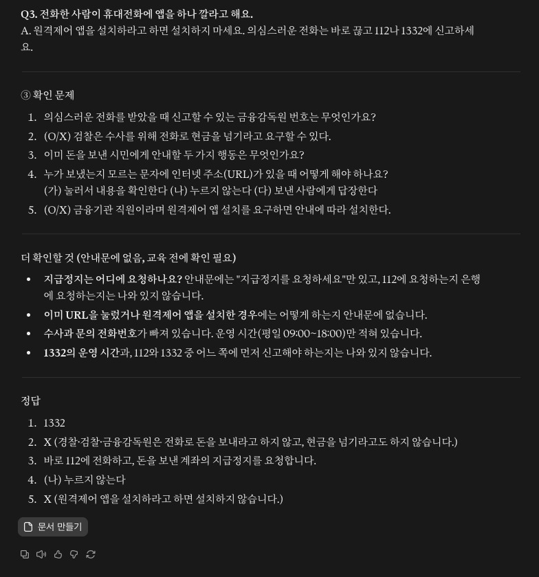
확인 문제 다섯 개를 정답 보지 않고 풀어 봅니다
질문의 답이 안내문에 있는 내용인지 대조합니다
맨 끝 「더 확인할 것」을 읽습니다
안내문만 읽고 못 푸는 문제가 있으면 AI가 끼워 넣은 것입니다
확인 기준
문제 다섯 개를 안내문만 읽고 풀 수 있는가
자주 묻는 질문의 답에 안내문에 없는 내용이 없는가
「더 확인할 것」에 무엇이 적혔는가
스킬 가져가기
오늘 쓴 스킬을 가져갑니다
웹(claude.ai)에서 실습하신 분은 ①~④ 만 하면 됩니다.
스킬 가져가기 ①실습 페이지에서 「★ 스킬 가져가기」를 누릅니다
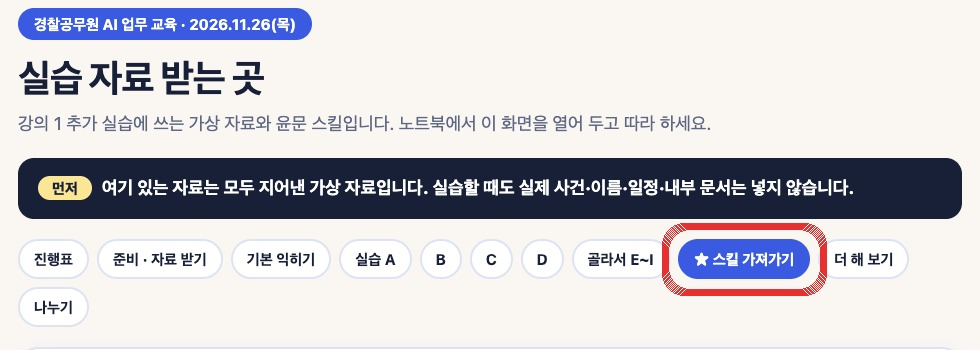
실습 페이지(is.gd/pol26) 탭으로 갑니다
맨 위 단추 줄에서 파란 「★ 스킬 가져가기」를 누릅니다
화면이 아래로 내려가 「스킬 가져가기 ②」의 파란 단추가 보입니다
단추 줄이 안 보이면 페이지를 맨 위로 올립니다
스킬 가져가기 ②파란 「한 번에 복사」를 누릅니다
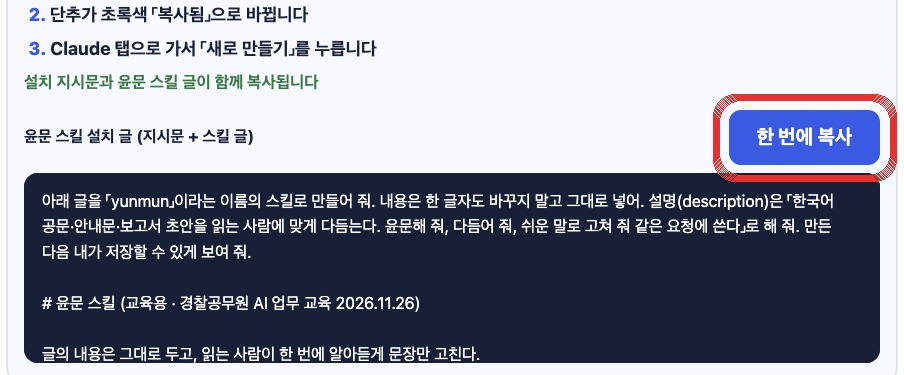
파란 단추 「한 번에 복사」를 누릅니다
단추가 초록색 「복사됨」으로 바뀝니다
Claude 탭으로 가서 「새로 만들기」를 누릅니다
설치 지시문과 윤문 스킬 글이 함께 복사됩니다
윤문 스킬 설치 글 (지시문 + 스킬 글)
아래 글을 「yunmun」이라는 이름의 스킬로 만들어 줘. 내용은 한 글자도 바꾸지 말고 그대로 넣어. 설명(description)은 「한국어 공문·안내문·보고서 초안을 읽는 사람에 맞게 다듬는다. 윤문해 줘, 다듬어 줘, 쉬운 말로 고쳐 줘 같은 요청에 쓴다」로 해 줘. 만든 다음 내가 저장할 수 있게 보여 줘.
# 윤문 스킬 (교육용 · 경찰공무원 AI 업무 교육 2026.11.26)
글의 내용은 그대로 두고, 읽는 사람이 한 번에 알아듣게 문장만 고친다.
## 넣으면 안 되는 자료
- 실제 사건 내용, 수사 자료, 개인정보(이름·주민번호·주소·연락처·차량 번호), 내부 문서, 보안 정보.
- 받은 글에 이런 내용이 보이면 고치지 말고 멈춘다. 「가명 처리한 뒤 다시 주세요」라고 알린다.
## 순서
1. **읽는 사람 확인.** 누가 읽는 글인지 모르면 먼저 묻는다(예: 60대 이상 시민, 기자, 내부 결재권자).
2. **사실 목록 뽑기.** 고치기 전에 원문의 사실을 번호 목록으로 뽑는다: 숫자, 날짜·시간, 전화번호, 금액, 기관·부서 이름, 해야 할 행동.
3. **고치기.** 아래 「고치는 기준」대로 고친다.
4. **대조.** 2번 목록의 사실이 고친 글에 그대로 있는지 하나씩 확인해 표로 보여 준다(사실 / 고친 글에 있음 / 바뀜).
5. **바꾼 곳 알리기.** 무엇을 바꿨는지 세 줄로 적는다.
## 고치는 기준
### 1단계 · 사람이 쓰지 않는 말 빼기
- 뜻 없이 꾸미는 말: 「가치를 실현」「첫걸음으로서」「소중한」「각별한 주의」「적극적인 대응」「지속적으로」
- 돌려 말하기: 「~라 할 것입니다」「~하는 것이 바람직하다」「~인바」「~하시어」「~하여 주시기 바랍니다」가 줄마다 되풀이되는 것
- 같은 말 되풀이, 번역한 것 같은 문장(「~에 대한」「~을 통해」가 겹치는 문장)
### 2단계 · 문서 규칙
- 결론과 해야 할 행동을 맨 앞에 둔다.
- 한 문장에 한 가지 뜻. 한 문장은 40자 안팎.
- 어려운 한자어·외래어는 쉬운 말로 바꾼다(이체 → 돈을 보냄, 애플리케이션 → 앱, 유념 → 꼭 기억).
- 해야 할 일이 여러 개면 번호를 붙인다.
- 높임말 수준은 읽는 사람에 맞춘다(시민 안내문은 「~하세요」「~합니다」).
### 3단계 · 우리 기관 규칙 (여기에 더합니다)
- (예: 날짜는 「2026. 11. 26.(목)」으로 쓴다)
- (예: 기관 이름은 줄이지 않는다)
- (결재 때 받은 지적을 한 줄씩 여기에 쌓습니다)
## 꼭 지킬 것
- 사실·숫자·전화번호·기관 이름·시간은 하나도 바꾸지 않는다. 원문에 없는 내용을 더하지 않는다.
- 뜻이 분명하지 않은 곳은 추측해서 고치지 말고 `[확인 필요]`라고 표시한다.
- 고친 글은 초안이다. 내보내기 전에 담당자가 원문과 대조한다.
스킬 가져가기 ③붙여 넣고, 카드가 나오면 「저장」을 누릅니다
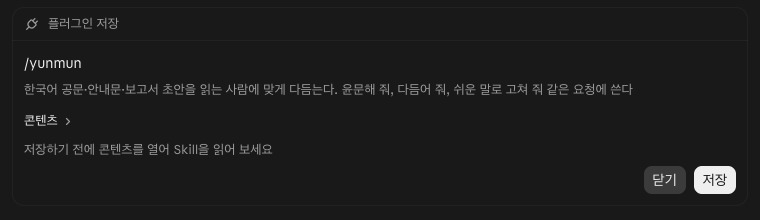
입력창을 누르고 Ctrl+V 로 붙여 넣은 뒤 Enter 로 보냅니다
/yunmun 카드가 나오면 「콘텐츠」를 눌러 읽어 봅니다
카드 오른쪽 아래 「저장」을 누릅니다
저장 단추가 안 나오면 실습 B ③ 처럼 붙여 넣어 씁니다
스킬 가져가기 ④기억 노트 · 새 대화에서도 이어 가는 법
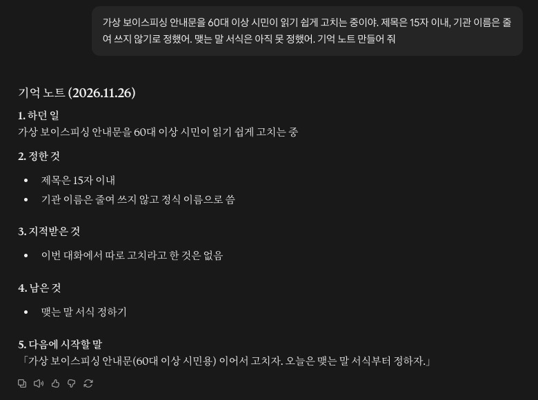
하던 대화에 페이지 「스킬 가져가기 ④」의 기억 노트 글을 붙여 넣고 보냅니다
「기억 노트 만들어 줘」라고 보내고, 나온 한 장을 저장합니다
새 대화에 그 한 장을 붙여 넣고 「이어서 하자」라고 보냅니다
실제 사건·이름은 기억 노트에 적지 않습니다
기억 노트 글
아래는 「기억 노트」 방식입니다. 이 대화에서 그대로 따라 주세요. 읽었으면 「준비됐습니다」라고만 답하세요.
# 기억 노트 (교육용 · 경찰공무원 AI 업무 교육 2026.11.26)
Claude 웹 대화는 새 대화를 열면 앞 대화를 잊는다. 그래서 대화가 끝날 때 꼭 남길 것만 짧게 적어 두고, 다음 대화 첫머리에 붙여 넣어 이어 간다.
## 내가 「기억 노트 만들어 줘」라고 하면
이 대화에서 아래 다섯 가지를 뽑아 한 장으로 적는다.
1. 하던 일: 무슨 문서·업무였는지 한 줄
2. 정한 것: 이번에 확정한 기준·말투·서식
3. 지적받은 것: 내가 고치라고 한 것과 고친 방법
4. 남은 것: 아직 안 끝난 일, 확인이 필요한 것
5. 다음에 시작할 말: 다음 대화 첫 문장으로 쓸 한 줄
## 지킬 것
- 실제 사건 내용, 수사 자료, 개인정보(이름·주민번호·주소·연락처), 내부 문서 내용은 기억 노트에 적지 않는다. 그런 내용이 대화에 있었다면 「(적지 않음)」이라고 표시한다.
- 내가 말하지 않은 것은 지어내지 않는다.
- 한 장을 넘기지 않는다.
## 내가 기억 노트를 붙여 넣고 시작하면
노트를 읽고 「지난번에 여기까지 했습니다」로 세 줄 요약한 뒤, 「남은 것」부터 이어서 한다.
그다음 보낼 말
기억 노트 만들어 줘
claude-mem
claude-mem 은 Claude Code 에서만 됩니다
claude-mem 은 AI가 한 작업을 내 컴퓨터에 기록해 두었다가, 다음에 열 때 관련된 내용을 다시 넣어 주는 공개 프로그램입니다(Apache-2.0). 웹(claude.ai) 대화창에는 설치할 수 없습니다. 웹에서는 위의 「스킬 가져가기 ④ 기억 노트」를 씁니다.
꼭 읽기업무용 PC 에는 설치하지 않습니다. 개인 노트북에서, 공개 자료와 가상 자료로만 씁니다.
AI가 읽고 고치고 실행한 것을 전부 기록합니다. 업무 자료가 있는 폴더에서는 쓰지 않습니다.
기록은 내 컴퓨터의 ~/.claude-mem 폴더에 저장됩니다. 클라우드에 올리는 기능은 내가 켜야만 켜집니다.
설치 중에 이메일 로그인과 유료 체험(결제 수단 입력) 화면이 나옵니다. 꼭 해야 하는 것은 아닙니다. 아래 지시문은 로그인 없이 설치하게 적었습니다.
익명 사용 통계가 기본으로 켜져 있습니다. 끄려면 터미널에 npx claude-mem telemetry disable 을 입력합니다.
claude-mem 을 설치하려고 해. 먼저 https://github.com/thedotmack/claude-mem 의 README 에서 설치 방법과 시스템 요구 사항을 읽고, 내 컴퓨터에 Node.js 가 있는지 확인해서 무엇을 할지 순서대로 알려 줘. 내가 「진행해」라고 하면 그때 시작해.
로그인과 유료 체험은 하지 않을 거야. CLAUDE_MEM_ONLINE_OPTIN=false 로 설치하고, 설치가 끝나면 npx claude-mem telemetry disable 로 사용 통계를 꺼 줘.
결제 수단이나 이메일을 묻는 화면이 나오면 진행하지 말고 멈춰서 나에게 알려 줘. 마지막에 npx claude-mem doctor 로 잘 깔렸는지 확인해서 결과를 보여 줘.
윤문 스킬을 Claude Code 에 설치하기
Claude Code 에 붙여 넣는 지시문
https://livewithdev00-blip.github.io/police/files/yunmun_skill.zip 을 받아서 내 스킬 폴더(~/.claude/skills/yunmun)에 풀어 줘. 풀기 전에 안에 든 SKILL.md 내용을 나에게 먼저 보여 주고, 내가 「설치해」라고 하면 그때 설치해. 다른 파일은 건드리지 마.
더 해 보기
먼저 끝난 분은
같은 실습을 한 군데만 바꿔서 다시 합니다. 한 군데만 바꿔야 무엇 때문에 결과가 달라졌는지 알 수 있습니다.
실습 A · [멈춤] 줄을 빼고 다시
새 대화에서 「실습 A ①」 지시문의 마지막 [멈춤] 줄만 지우고 똑같이 시킵니다. 빈 숫자를 AI가 어떻게 처리하는지 앞 결과와 비교합니다.
실습 B · 읽는 사람을 바꿔서 다시
윤문 스킬 대화에 이어서 아래 글을 보냅니다. 말투·길이·순서에서 무엇이 달라지는지 봅니다. 사실 여덟 가지는 이번에도 그대로여야 합니다.
보낼 글
같은 안내문을, 읽는 사람을 출입 기자로 바꿔서 다시 고쳐 줘
실습 C · 옆 분 규칙을 내 스킬에
옆 분의 규칙 세 줄을 받아 아래 글 뒤에 적어 보냅니다. 규칙이 서로 부딪치면 그것이 부서에서 하나로 정해야 할 것입니다.
보낼 글
아래 세 줄도 3단계에 더하고 안내문을 다시 고쳐 줘
1.
2.
3.
실습 D · 옆 분 스킬 한 장을 돌려 보기
옆 분의 스킬 한 장을 새 대화에 붙여 넣고, 그 아래에 아래 글을 적어 보냅니다. 만든 사람의 설명 없이 결과가 나오면 다른 사람이 받아 쓸 수 있는 스킬입니다.
보낼 글
이 스킬대로 해 줘. 자료는 가상으로 네가 만들어서 써
나누기
기관별로 한 가지씩
정답을 묻는 것이 아닙니다. 해 보니 어땠는지 말합니다.
실습 A. AI가 멈춰서 물은 것은 무엇이었습니까. 묻지 않고 바로 표를 만들어 왔다면 그것도 말해 주세요.
실습 B. 한 줄 결과와 스킬 결과는 어디가 가장 달랐습니까. AI가 마음대로 정한 것이 몇 가지였습니까.
실습 C. 우리 부서 규칙 가운데 옆 부서도 쓸 만한 것 하나. 그 한 줄이 부서 스킬, 기관 스킬의 시작입니다.
오늘 만든 스킬 한 장과 우리 부서 윤문 스킬은 지우지 않습니다. 오후 「우리 기관 과제 풀기」에서 다시 씁니다.